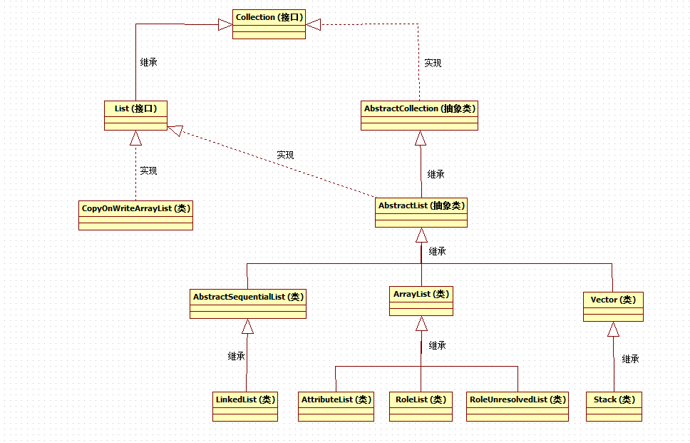

1 总览2 LinkedList2.1 内部实现 2.2 API2.2.1 add(E e)2.2.2 addFirst(E e)2.2.3 add(int index,E e)2.2.4 remove()、removeFirst()、poll()、pollFirst()2.2.5 removeLast()、pollLast()2.2.6 remove(int index)3 ArrayList3.1 内部实现3.2 API3.2.1 构造函数3.2.2 add(E e)3.2.3 add(int index,E e) 3.2.4 remove(int index) 3.2.5 remove(Object o) 3.2.6 iterator () 3.2.7 listIterator() 3.2.8 forEach()4 Vector4.1 内部实现 4.2 API4.2.1 构造函数 4.2.2 grow() 4.2.3 Stack5 CopyOnWriteArrayList5.1 API5.1.1 add(E e) 5.1.2 add(int index,E e) 5.1.3 remove(Object o)5.1.4 remove(int index) 5.1.5 set(int index,E e) 5.1.6 get(int index) 5.2 CopyOnWrite的缺点

LinkedList是一个双向链表，同时实现了List和Deque接口，允许插入重复元素，允许插入null值。它不是线程安全的。如果在多线程环境下使用，需要手动实现同步，或者使用工具类Collections提供的静态方法获取其同步的包装类：List list = Collections.synchronizedList(new LinkedList(...))；或者考虑使用concurrent模块提供的构建工具。
xtransient Node<E> first;transient Node<E> last;private static class Node<E> {E item;Node<E> next;Node<E> prev;Node(Node<E> prev, E element, Node<E> next) {this.item = element;this.next = next;this.prev = prev;}}
通过源码，可以看到LinkedList内部是通过维护两个首尾Node节点，每个Node节点内都记录这前后的节点和自身包含的元素，从而实现了一个双端链表。
向尾部添加，等同于addLast(E e)方法。
xxxxxxxxxxpublic boolean add(E e) {linkLast(e);return true;}void linkLast(E e) {final Node<E> l = last; //获取当前的尾节点final Node<E> newNode = new Node<>(l, e, null); //创建新节点,将其前节点关联到当前尾节点,后节点为null,因为add添加是向尾部添加last = newNode; //更新尾节点引用为新建的节点if (l == null) //如果之前的尾节点为null,说明链表中没有元素first = newNode; //那么新建的节点就是首节点elsel.next = newNode; //否则将之前的尾节点的后节点关联为新的尾节点size++; //递增元素个数modCount++; //递增修改次数}
向头部添加元素
xxxxxxxxxxpublic void addFirst(E e) {linkFirst(e);}private void linkFirst(E e) {final Node<E> f = first; //获取当前的首节点final Node<E> newNode = new Node<>(null, e, f); //新建节点,将其后节点关联到当前的首节点first = newNode; //更新首节点引用为新建节点if (f == null) //如果之前的首节点为null,说明链表中没有元素last = newNode; //那么新建节点也是尾节点elsef.prev = newNode; //否则将之前的首节点的前节点关联为新建节点size++; //递增元素个数modCount++; //递增修改次数}
向指定位置添加元素
xxxxxxxxxxpublic void add(int index, E element) {checkPositionIndex(index); //首先检查参数角标if (index == size) //当前最后一个元素的角标是size-1,如果index等于size,说明是向尾部添加linkLast(element); //调用linkLast方法向尾部添加元素elselinkBefore(element, node(index)); //否则,先获取index角标位置的元素,然后调用linkBefore向指定位置添加元素}private void checkPositionIndex(int index) {if (!isPositionIndex(index))throw new IndexOutOfBoundsException(outOfBoundsMsg(index));}private boolean isPositionIndex(int index) {return index >= 0 && index <= size; //检查参数角标是否超出范围}Node<E> node(int index) {// assert isElementIndex(index);if (index < (size >> 1)) { //如果index小于size的一半,也就是index在列表的前一半位置Node<E> x = first; //获取当前的首节点for (int i = 0; i < index; i++)x = x.next; //从首节点开始遍历,获取到当前index位置的元素return x;} else {Node<E> x = last; //反之则从尾节点开始向前遍历,获取到当前index位置的元素for (int i = size - 1; i > index; i--)x = x.prev;return x;}}void linkBefore(E e, Node<E> succ) {// assert succ != null;final Node<E> pred = succ.prev; //获取添加前index位置节点的前一个节点final Node<E> newNode = new Node<>(pred, e, succ); //创建新节点,将其前节点关联为pred,后节点关联为添加前index位置节点succ.prev = newNode; //更新添加前index位置节点的前节点关联if (pred == null) //如果pred为null,说明插入的是首节点first = newNode;elsepred.next = newNode; //否则更新pred的后节点关联为新建节点size++; //递增元素个数modCount++; //递增修改次数}
删除首节点。
remove和poll都会删除并返回删除u的元素，但是两者也有一个明显的区别：那就是当链表中没有元素时，remove操作抛处NoSuchElementException异常，而poll操作返回null。
以remove()方法为例:
xxxxxxxxxxpublic E remove() {return removeFirst();}public E removeFirst() {final Node<E> f = first;if (f == null)throw new NoSuchElementException();return unlinkFirst(f);}private E unlinkFirst(Node<E> f) {// assert f == first && f != null;final E element = f.item; //获取首节点中的元素final Node<E> next = f.next; //获取首节点的下一个节点f.item = null; //清空首节点的引用,避免由于过期引用引起内存泄露f.next = null; // help GC //清空首节点的引用,避免由于过期引用引起内存泄露first = next; //更新首节点引用if (next == null) //如果next为null,说明链表删除首节点后元素数量为0last = null; //更新last为nullelsenext.prev = null; //否则更新next的前节点为null,因为现在next为新的首节点size--; //递减元素个数modCount++; //递增修改次数return element; //返回元素}
删除尾节点。
xxxxxxxxxxpublic E removeLast() {final Node<E> l = last;if (l == null)throw new NoSuchElementException();return unlinkLast(l);}private E unlinkLast(Node<E> l) {// assert l == last && l != null;final E element = l.item; //获取尾节点中的元素final Node<E> prev = l.prev; //获取尾节点的前节点l.item = null; //清空尾节点的引用,避免由于过期引用引起内存泄露l.prev = null; // help GC //清空尾节点的引用,避免由于过期引用引起内存泄露last = prev; //更新尾节点引用if (prev == null) //如果prev为null,说明链表删除尾节点后元素数量为0first = null; //更新first为nullelseprev.next = null; //否则更新prev的后节点为null,因为现在prev为新的尾节点size--; //递减元素个数modCount++; //递增修改次数return element; //返回元素}
删除指定位置的元素。
xxxxxxxxxxpublic E remove(int index) {checkElementIndex(index); //先检查index角标是否超出范围return unlink(node(index)); //先调用node()方法获取index位置的元素,此方法在上面已经有详细讲解,然后调用unlink方法删除index位置的元素}E unlink(Node<E> x) {// assert x != null;final E element = x.item; //获取节点的元素final Node<E> next = x.next; //获取前节点final Node<E> prev = x.prev; //获取后节点if (prev == null) { //如果前节点为null,说明当前index位置节点为first首节点first = next; //更新首节点引用为后节点} else {prev.next = next; //否则将index位置的前后节点相连x.prev = null; //清空被删除节点的前节点引用,避免过期引用导致内存泄露}if (next == null) { //如果后节点为null,说明当前index位置节点为last尾节点last = prev; //更新尾节点引用为前节点} else {next.prev = prev; //否则将index位置的前后节点相连x.next = null; //清空被删除节点的后节点引用,避免过期引用导致内存泄露}x.item = null; //清空删除节点的元素引用,避免过期引用导致内存泄露size--; //递减元素个数modCount++; //递增修改次数return element; //返回元素}
LinkedList与ArrayList相比，插入和删除更快，但是随即查询和遍历较慢。
ArrayList是一个元素有序、可重复的集合。内部通过维护一个数组实现，允许添加任何元素，包括null值。 size、isEmpty、get、set、iterator和listIterator方法的时间复杂度为O(1)，add添加操作的时间复杂度为O(n)，剩下的其他操作都是线性时间的复杂度(大体上讲)。 非线程安全，如果在多线程环境下使用，请手动同步，或者使用集合工具类Collections来获取其同步包装类: List list = Collections.synchronizedList(new ArrayList(...)); 它返回的迭代器或者迭代方法属于快速失败，也就是说在遍历过程中，如果并发添加或者删除了元素，那么将立即抛出ConcurrentModificationException异常。
xxxxxxxxxxprivate static final int DEFAULT_CAPACITY = 10; //ArrayList的默认大小private static final Object[] EMPTY_ELEMENTDATA = {}; //空数组,当指定初始化大小为0的ArrayList时,elementData默认为EMPTY_ELEMENTDATAprivate static final Object[] DEFAULTCAPACITY_EMPTY_ELEMENTDATA = {}; //默认的空数组,当使用无参构造函数初始化ArrayList时,elementData默认为EMPTY_ELEMENTDATAtransient Object[] elementData; //存放元素的真正内部数组容器private int size; //记录元素个数
xxxxxxxxxxpublic ArrayList(int initialCapacity) {if (initialCapacity > 0) {this.elementData = new Object[initialCapacity];} else if (initialCapacity == 0) { //如果指定初始化大小为0,那么elementData直接默认为EMPTY_ELEMENTDATAthis.elementData = EMPTY_ELEMENTDATA;} else {throw new IllegalArgumentException("Illegal Capacity: "+initialCapacity);}}public ArrayList() {this.elementData = DEFAULTCAPACITY_EMPTY_ELEMENTDATA; //当时用无参构造函数初始化是,elementData默认为DEFAULTCAPACITY_EMPTY_ELEMENTDATA}
添加元素。
在内部数组容器中添加一个元素的操作很简单，我们查看add源码的主要目的是了解ArrayList是如何来实现自动扩容的。
xxxxxxxxxxpublic boolean add(E e) {ensureCapacityInternal(size + 1); // 检查添加一个元素后容器大小情况,如果达到一定大小,自动扩容elementData[size++] = e; //添加元素操作,很简单,向数组指定位置添加一个元素return true;}private void ensureCapacityInternal(int minCapacity) {ensureExplicitCapacity(calculateCapacity(elementData, minCapacity)); //先调用calculateCapacity方法来比较elementData内部数组容器的大小和添加一个元素后需要的大小,并取较大值,然后调用ensureExplicitCapacity方法}private static int calculateCapacity(Object[] elementData, int minCapacity) {if (elementData == DEFAULTCAPACITY_EMPTY_ELEMENTDATA) { //如果elementData为默认数组,那么说明数组内没有元素return Math.max(DEFAULT_CAPACITY, minCapacity); //直接比较默认数组大小于所需大小}return minCapacity; //否则说明数组内已经有元素,不是空数组,那么直接返回所需大小}private void ensureExplicitCapacity(int minCapacity) {modCount++;if (minCapacity - elementData.length > 0) //如果当前elementData数组大小不能满足需要grow(minCapacity); //进行扩容}private void grow(int minCapacity) {// overflow-conscious codeint oldCapacity = elementData.length; //elementData数组扩容前的大小int newCapacity = oldCapacity + (oldCapacity >> 1); //每次扩容为原先大小的1.5倍if (newCapacity - minCapacity < 0) //如果扩容后的大小还不满足所需大小newCapacity = minCapacity; //那么直接扩容到所需大小if (newCapacity - MAX_ARRAY_SIZE > 0) //如果扩容后大小大于MAX_ARRAY_SIZE(默认为Integer.MAX_VALUE - 8)newCapacity = hugeCapacity(minCapacity); //那么调用hugeCapacity,返回一个合理的扩容大小// minCapacity is usually close to size, so this is a win:elementData = Arrays.copyOf(elementData, newCapacity); //直接使用工具类Arrays提供的静态方法进行扩容(静态方法内部是通过创建新数组并重新填充元素来实现的)}private static int hugeCapacity(int minCapacity) {if (minCapacity < 0) // overflow-consciousthrow new OutOfMemoryError();return (minCapacity > MAX_ARRAY_SIZE) ?Integer.MAX_VALUE :MAX_ARRAY_SIZE;}
向指定位置添加元素。
xxxxxxxxxxpublic void add(int index, E element) {rangeCheckForAdd(index); //检查参数index是否合法ensureCapacityInternal(size + 1); // 检查数组容器大小是否够用,不够的话进行扩容System.arraycopy(elementData, index, elementData, index + 1,size - index); //将elementData中从index位置开始的元素复制到elementData中index+1的位置,也就是将elementData数组中index位置开始的元素向后移动一位elementData[index] = element; //在index位置放入新元素size++;}private void rangeCheckForAdd(int index) {if (index > size || index < 0)throw new IndexOutOfBoundsException(outOfBoundsMsg(index));}
移除指定位置的元素。
xxxxxxxxxxpublic E remove(int index) {rangeCheck(index); //检查index是否合法modCount++;E oldValue = elementData(index); //获取index位置的元素int numMoved = size - index - 1;if (numMoved > 0)System.arraycopy(elementData, index+1, elementData, index,numMoved); //从index+1位置开始,将所有元素向前移动一位elementData[--size] = null; //清除数组最后一位的引用,递减数组个数sizereturn oldValue; //返回被删除的元素}private void rangeCheck(int index) {if (index >= size)throw new IndexOutOfBoundsException(outOfBoundsMsg(index));}E elementData(int index) {return (E) elementData[index];}
删除指定元素。
xxxxxxxxxxpublic boolean remove(Object o) {if (o == null) {for (int index = 0; index < size; index++)if (elementData[index] == null) {fastRemove(index); //匹配到null,调用fastRemove进行删除return true;}} else {for (int index = 0; index < size; index++)if (o.equals(elementData[index])) {fastRemove(index); //匹配到元素o,调用fastRemove进行删除return true;}}return false;}private void fastRemove(int index) {modCount++;int numMoved = size - index - 1;if (numMoved > 0)System.arraycopy(elementData, index+1, elementData, index,numMoved); //从index+1位置开始,将所有元素向前移动一位elementData[--size] = null; //清除数组最后一位的引用(如果不清除引用,可能引起过期引用导致的内存泄露),递减数组个数size}
返回迭代器。
xxxxxxxxxxpublic Iterator<E> iterator() {return new Itr();}private class Itr implements Iterator<E> {int cursor; // 指针int lastRet = -1; // 下一个需要被返回的元素的角标,如果没有元素,则为-1int expectedModCount = modCount; // 记录当前被修改的次数(ArrayList的每次增删改操作都会将modCount递增)public boolean hasNext() {return cursor != size; //判断是否有下一个元素,秩序判断当前指针是否到达结尾}@SuppressWarnings("unchecked")public E next() {checkForComodification(); //检查modCount是否发生变化,如果发生变化,说明有并发修改操作,那么快速失败.抛出ConcurrentModificationException异常int i = cursor; //获取当前指针位置if (i >= size)throw new NoSuchElementException();Object[] elementData = ArrayList.this.elementData; //如果指针位置超出数组,抛出异常if (i >= elementData.length)throw new ConcurrentModificationException();cursor = i + 1; //递增指针.并返回当前位置元素return (E) elementData[lastRet = i];}public void remove() {if (lastRet < 0) //检查是否有下一个元素throw new IllegalStateException();checkForComodification(); //检查是否存在并发修改try {ArrayList.this.remove(lastRet); //删除元素cursor = lastRet; //更新指针lastRet = -1;expectedModCount = modCount; //更新并发操作数} catch (IndexOutOfBoundsException ex) {throw new ConcurrentModificationException();}}final void checkForComodification() {if (modCount != expectedModCount)throw new ConcurrentModificationException();}}
返回一个ListItr迭代器，该迭代器继承了iterator()返回的迭代器，新增了add、set和获取前一个元素的操作，此处不做赘述了，实现比较简单。
xxxxxxxxxxpublic ListIterator<E> listIterator(int index) {if (index < 0 || index > size)throw new IndexOutOfBoundsException("Index: "+index);return new ListItr(index);}
作为java8新扩展的方法，forEach遍历与迭代器的不同之处在于：forEach并不是快速失败，而是遍历操作后，检查并发性修改操作 。
xxxxxxxxxxpublic void forEach(Consumer<? super E> action) {Objects.requireNonNull(action);final int expectedModCount = modCount;@SuppressWarnings("unchecked")final E[] elementData = (E[]) this.elementData;final int size = this.size;for (int i=0; modCount == expectedModCount && i < size; i++) {action.accept(elementData[i]);}if (modCount != expectedModCount) { //可以看到,对于并发性修改操作的检查是在遍历操作之后throw new ConcurrentModificationException();}}
ArrayList与LinkedList相比，更适合随机查询和遍历，插入和删除操作较慢。
Vector，同ArrayList一样，也是通过内部维护一个数组来实现的，允许添加任何类型的元素，包括null值。但是与ArrayList最大的不同之处在于：Vector是同步的，在其导出API中，add、remove等方法都使用了synchronized关键字来进行同步，所以在性能上肯定会比不同步的ArrayList差。
xxxxxxxxxxprotected Object[] elementData; //内部数组protected int elementCount; //元素计数器protected int capacityIncrement; //增长因子
与ArrayList相比，Vector内部多出了一个字段capacityIncrement，我们知道，ArrayList的内部数组默认是以1.5倍的大小增长，而Vector通过维护一个单独的capacityIncrement字段来管理数组的增长因子。
xxxxxxxxxxpublic Vector(int initialCapacity, int capacityIncrement) { //自定义初始数组大小和增长因子super();if (initialCapacity < 0)throw new IllegalArgumentException("Illegal Capacity: "+initialCapacity);this.elementData = new Object[initialCapacity];this.capacityIncrement = capacityIncrement;}public Vector(int initialCapacity) {this(initialCapacity, 0); //自定义初始数组大小,默认增长因子为0}public Vector() {this(10); //默认初始化数组大小为10}
Vector提供了三个构造函数，支持自定义初始化数组的大小和数组的增长因子。默认初始化数组大小为10，增长因子为0。有一点我们不要误解，那就是增长因子为0不代表数组不会增长，下面我们就看一下实现数组扩容的grow方法实现。
实现数组扩容 。
xxxxxxxxxxprivate void grow(int minCapacity) {// overflow-conscious codeint oldCapacity = elementData.length;int newCapacity = oldCapacity + ((capacityIncrement > 0) ?capacityIncrement : oldCapacity); //此处决定了数组扩容后的大小,如果我们定义了增长因子,那么将数组大小扩大固定的定义大小,如果未定义(此时默认为0)或者定义为0,那么数组将以2倍的大小进行扩容if (newCapacity - minCapacity < 0)newCapacity = minCapacity;if (newCapacity - MAX_ARRAY_SIZE > 0)newCapacity = hugeCapacity(minCapacity);elementData = Arrays.copyOf(elementData, newCapacity);}
Vector还有一个子类Stack，Stack实现了LIFO(后进先出)，是一个栈结构，Stack也是同步的，其定义了push、pop、peek等基础的栈操作。
xxxxxxxxxx//向栈中压入元素,越是后面压入的元素,在数组中的角标值越大public E push(E item) {addElement(item);return item;}//删除数组最后一个元素,也就是栈顶元素,并返回元素public synchronized E pop() {E obj;int len = size();obj = peek();removeElementAt(len - 1);return obj;}//返回数组最后一个元素,也就是栈顶元素public synchronized E peek() {int len = size();if (len == 0)throw new EmptyStackException();return elementAt(len - 1);}
Vector内部数组的扩容策略和ArrayList的不同，其他的实现逻辑基本和ArrayList相同，只是都使用了synchronized来同步。可以将Vector看作是一个同步版的ArrayList 。
CopyOnWriteArrayList是ArrayList的线程安全的变体，其原理大概可以通俗的理解为：初始化的时候只有一个容器，很长一段时间，这个容器数据、数量等没有发生变化的时候，多个线程都是读取(假设这段时间里只发生读取的操作)同一个容器中的数据，所以这样大家读到的数据都是唯一、一致、安全的，但是后来有人往里面增加了一个数据，这个时候CopyOnWriteArrayList 底层实现添加的原理是先copy出一个容器(可以简称副本)，再往新的容器里添加这个新的数据，最后把新的容器的引用地址赋值给了之前那个旧的的容器地址，但是在添加这个数据的期间，其他线程如果要去读取数据，仍然是读取到旧的容器里的数据。
首先，我们先看下add、remove等增删方法的实现，然后再对比get等查找方法，来深入了解其并发性是如何实现的。
添加元素
xxxxxxxxxxpublic boolean add(E e) {final ReentrantLock lock = this.lock;lock.lock(); //lock锁住try {Object[] elements = getArray(); //获取当前的数组容器int len = elements.length;Object[] newElements = Arrays.copyOf(elements, len + 1); //将当前数组容器中的元素拷贝到一个新数组中,新数组大小为当前数组大小+1newElements[len] = e; //添加元素到新数组setArray(newElements); //更新数组容器引用为新数组return true;} finally {lock.unlock(); //lock解锁}}final Object[] getArray() {return array;}final void setArray(Object[] a) {array = a;}
向指定位置添加元素
xxxxxxxxxxpublic void add(int index, E element) {final ReentrantLock lock = this.lock;lock.lock();try {Object[] elements = getArray();int len = elements.length;if (index > len || index < 0)throw new IndexOutOfBoundsException("Index: "+index+", Size: "+len); //检查参数index的有效性Object[] newElements;int numMoved = len - index;if (numMoved == 0) //如果index==len,说明正好是向数组尾部添加元素newElements = Arrays.copyOf(elements, len + 1); //那么直接拷贝出一个大小+1的数组else {newElements = new Object[len + 1]; //否则创建一个大小+1的新数组System.arraycopy(elements, 0, newElements, 0, index); //拷贝index之前的元素到新数组System.arraycopy(elements, index, newElements, index + 1, //拷贝index之后的元素到新数组numMoved);}newElements[index] = element; //将元素添加到新数组setArray(newElements); //更新数组容器引用} finally {lock.unlock();}}
删除指定元素
xxxxxxxxxxpublic boolean remove(Object o) {Object[] snapshot = getArray(); //获取当前的数组容器,作为一个快照副本int index = indexOf(o, snapshot, 0, snapshot.length); //在快照中查找元素o的位置,注意,indexOf的查找操作是不加锁同步的,所以为了避免容器并发修改带来的影响,在快照中进行查找return (index < 0) ? false : remove(o, snapshot, index); //找到则进行删除}private static int indexOf(Object o, Object[] elements,int index, int fence) {if (o == null) {for (int i = index; i < fence; i++)if (elements[i] == null)return i;} else {for (int i = index; i < fence; i++)if (o.equals(elements[i]))return i;}return -1;}private boolean remove(Object o, Object[] snapshot, int index) {final ReentrantLock lock = this.lock;lock.lock(); //lock加锁try {Object[] current = getArray(); //获取当前的数组容器int len = current.length;if (snapshot != current) findIndex: { //如果快照副本域当前数组容器不相等,说明已经被并发修改过,则需要进一步的查找(将此if语句块标记为findIndex)int prefix = Math.min(index, len); //获取index和len中的最小值,因为删除操作在到达这里之前是不加锁的,可能其他线程已经完成了删除操作,从而使得len小于indexfor (int i = 0; i < prefix; i++) { //遍历if (current[i] != snapshot[i] && eq(o, current[i])) { //如果当前容器中i位置元素与快照中i位置元素不想等,并且当前数组i位置元素就是要查找的元素index = i; //记录位置,跳出if,后面的if语句不会再执行break findIndex;}}if (index >= len) //遍历中未找到元素,说明元素已经被删除过了,直接返回return false;if (current[index] == o) //如果当前数组中的index位置正好是该元素,跳出break findIndex;index = indexOf(o, current, index, len); //继续在当前数组容器index位置开始查找if (index < 0) //如果未找到,说明已经被删除了,直接返回return false;}Object[] newElements = new Object[len - 1]; //新建数组,大小-1System.arraycopy(current, 0, newElements, 0, index); //复制index位置前的元素到新数组System.arraycopy(current, index + 1, //复制index位置之后的元素到新数组newElements, index,len - index - 1);setArray(newElements); //更新数组容器引用return true;} finally {lock.unlock();}}
删除指定位置的元素
xxxxxxxxxxpublic E remove(int index) {final ReentrantLock lock = this.lock;lock.lock(); //lock加锁try {Object[] elements = getArray(); //获取当前数组容器int len = elements.length;E oldValue = get(elements, index); //获取当前数组容器中index位置的元素int numMoved = len - index - 1;if (numMoved == 0) //此时说明index是数组的最后一个位置setArray(Arrays.copyOf(elements, len - 1)); //那么直接将最后一个元素之前的所以元素拷贝到新数组,并更新数组引用else {Object[] newElements = new Object[len - 1]; //否新建数组,大小-1System.arraycopy(elements, 0, newElements, 0, index); //拷贝index位置之前的元素到新数组System.arraycopy(elements, index + 1, newElements, index, //拷贝index位置之后的元素到新数组numMoved);setArray(newElements);}return oldValue; //返回删除的元素} finally {lock.unlock();}}private E get(Object[] a, int index) {return (E) a[index];}
更新指定位置的元素
xxxxxxxxxxpublic E set(int index, E element) {final ReentrantLock lock = this.lock;lock.lock(); //lock加锁try {Object[] elements = getArray(); //获取当前数组容器E oldValue = get(elements, index); //获取当前数组容器中index位置的元素if (oldValue != element) { //如果两者不相等,进行更新int len = elements.length;Object[] newElements = Arrays.copyOf(elements, len); //拷贝一个elements的副本newElements[index] = element; //更新index位置为新的元素setArray(newElements); //更新数组容器引用} else {// Not quite a no-op; ensures volatile write semanticssetArray(elements); //两者相等,直接更新数组容器引用}return oldValue; //返回index位置的原来的值} finally {lock.unlock();}}
查找指定位置的元素
xxxxxxxxxxpublic E get(int index) {return get(getArray(), index);}private E get(Object[] a, int index) {return (E) a[index];}
7. indexOf(Object o) 查询指定元素的位置
xxxxxxxxxxpublic int indexOf(Object o) {Object[] elements = getArray();return indexOf(o, elements, 0, elements.length);}private static int indexOf(Object o, Object[] elements,int index, int fence) {if (o == null) {for (int i = index; i < fence; i++)if (elements[i] == null)return i;} else {for (int i = index; i < fence; i++)if (o.equals(elements[i]))return i;}return -1;}
上面列出了CopyOnWriteArrayList的增加、删除、更新、查找操作的源码实现，我们可以看到，get和indexOf的查询操作并没有加锁同步，而add、set、remove这些增删改的操作使用了加锁同步，并且使用的都是同一个lock，所以，CopyOnWriteArrayList的并发性，是针对查找和修改(包括添加和删除)的操作而言的，查找和修改操作可以并发的进行，如果同时进行修改，那么也会竞争相同的锁。 CopyOnWriteArrayList每次对内部数组容器进行修改后，都会创建一个新的数组来更新引用，所以当元素过多时，不适合使用CopyOnWriteArrayList，因为数组过大，拷贝的成本比较高。
CopyOnWrite容器有很多优点，但是同时也存在两个问题，即内存占用问题和数据一致性问题。所以在开发的时候需要注意一下。
内存占用问题。
因为CopyOnWrite的写时复制机制，所以在进行写操作的时候，内存里会同时驻扎两个对象的内存，旧的对象和新写入的对象（注意:在复制的时候只是复制容器里的引用，只是在写的时候会创建新对象添加到新容器里，而旧容器的对象还在使用，所以有两份对象内存）。如果这些对象占用的内存比较大，比如说200M左右，那么再写入100M数据进去，内存就会占用300M，那么这个时候很有可能造成频繁的Yong GC和Full GC。之前我们系统中使用了一个服务由于每晚使用CopyOnWrite机制更新大对象，造成了每晚15秒的Full GC，应用响应时间也随之变长。 针对内存占用问题，可以通过压缩容器中的元素的方法来减少大对象的内存消耗，比如，如果元素全是10进制的数字，可以考虑把它压缩成36进制或64进制。或者不使用CopyOnWrite容器，而使用其他的并发容器，如ConcurrentHashMap。
数据一致性问题。
CopyOnWrite容器只能保证数据的最终一致性，不能保证数据的实时一致性。所以如果你希望写入的的数据，马上能读到，请不要使用CopyOnWrite容器。